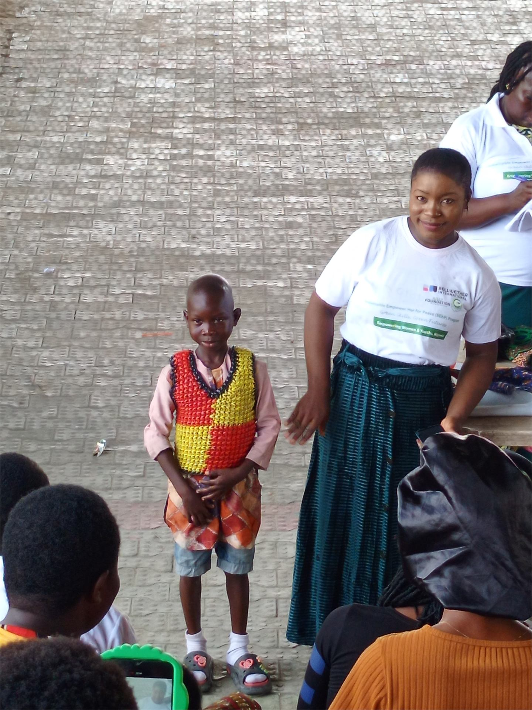

Empowering Women, Youth, and Communities for a Sustainable Future.
Bridging the gap between grassroots action and international standards to create lasting, human-centric progress across Africa.
Our Mission
We are dedicated to equipping individuals with the tools, education, and resources necessary to build self-sustaining communities. Through targeted vocational training, girls' education initiatives, and sustainable enterprise development, we foster an environment where potential meets opportunity, rooted in cultural respect and driven by measurable impact.
Impact at a Glance
Measuring our journey towards a sustainable future.
Core Programs
Initiatives driving grassroots change.

Sustainable EmpowerHer
Equipping women with green skills, microgrants, zero-interest loan opportunities, mentorship, and market access to grow dignified income.
Learn More arrow_forward
Green Vocational Skills
Training youth in recycling, upcycling, repair culture, reusable product making, and other circular economy trades.
Learn More arrow_forward
Girls' Education
Breaking barriers to education by providing scholarships, safe learning environments, and essential resources for young girls.
Learn More arrow_forwardBe the Catalyst for Change
Your support directly funds programs that build resilience and create opportunities. Whether you choose to donate, volunteer, or partner with us, your involvement is a vital thread in the fabric of community transformation.

Supported By Global Visionaries